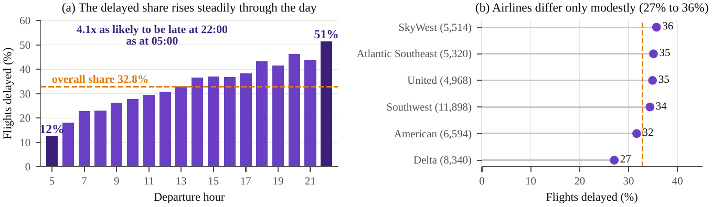
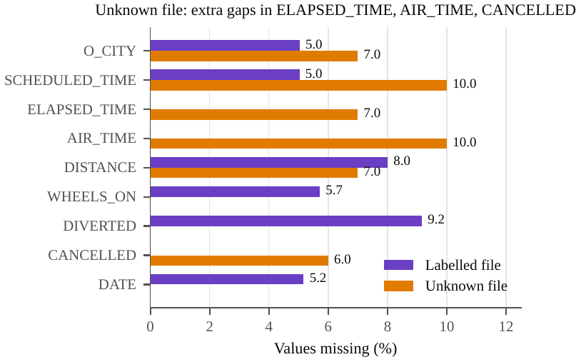
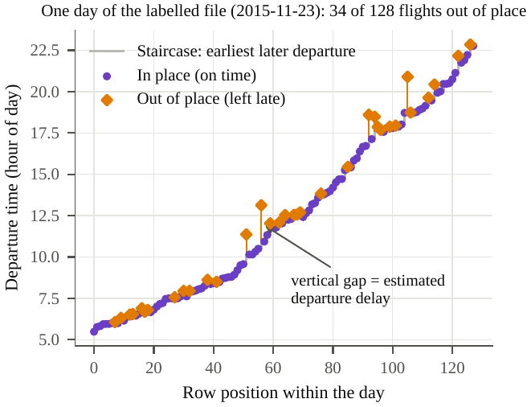
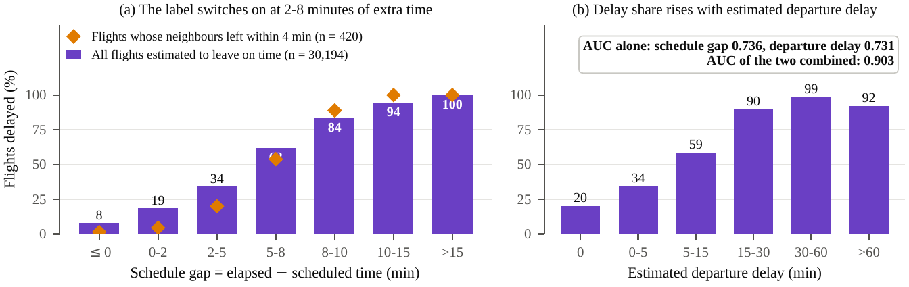

The data and the discovery
Two files, one hidden pattern.
Before any model, the files needed a closer look. What I found there explains almost all of the project's accuracy.
The task and the data
Given the recorded attributes of a flight, predict Arrival_Delay, where 1 means
delayed and 0 means not delayed. The 15 inputs describe the origin, destination, airline,
date, departure time, scheduled and elapsed duration, air time, distance, wheels-on time and
taxi-in time. A labelled file of 42,634 flights was used to build models, and an unlabelled
file of 21,318 flights was used for the final Kaggle assessment.
Of the labelled flights, 32.8% are delayed. A classifier that always predicts “not delayed” would be 67.2% accurate, yet its F1 for the delayed class would be zero. That is why the project is scored on F1.
Why the metric changed the result
A first Decision Tree tuned for accuracy scored 0.6044 on Kaggle. Tuning the same model for F1, and choosing the cut-off to maximise F1, raised it to 0.6407. Every later model was tuned the same way.
What the data looks like
Time of day separates flights well: the delayed share rises from 12% for 05:00 departures to 51% for 22:00 departures, about four times as high. The six airlines span only 27% to 36%, so airline turned out to be a minor input.

Missing values
The two files have different gaps. The unlabelled file is missing 6% to 10% of values in columns that are complete in the labelled file, at suspiciously round rates, so the models had to cope with duration columns being imputed at prediction time even though they were complete in training.

The hidden structure
Within each day, the row position correlates 0.97 with departure clock time on average over 334 days. The files are sorted by date and then by scheduled departure time, a column that is never supplied.
That matters because a flight that left on time appears exactly where its departure time puts it, while a flight that left late appears out of place, with a departure later than flights listed after it. The earliest actual departure among the later rows bounds the scheduled departure, and the gap estimates the departure delay.

Why two signals beat one
An arrival delay is largely the departure delay plus any extra time spent on the route. The schedule gap (elapsed time minus scheduled time) captures the second part, and the estimated departure delay captures the first. Each alone reaches an AUC of only about 0.73. Together they reach 0.903.

Try it yourself
Drag each slider to see how the share of delayed flights changes. The values are the observed shares from the charts above, not a model’s predictions.
The two sliders are separate views of the same pattern. They do not combine into one estimate, which is exactly why using both signals together (AUC 0.903) beats either alone.
| Finding | Consequence |
|---|---|
| Rows are sorted by date, then scheduled departure time | Departure delay can be estimated from row order. |
| The files differ in density: about 128 flights a day labelled, 64 unlabelled | Features are computed on halves of about 64 flights a day, so training matches prediction time. |
| 19% of flights recur within 45 days | Pooling the copies gives a sharper schedule estimate. |
| The label turns on at about 5 minutes late | It is close to “arrived more than a few minutes behind schedule”, not the common 15-minute rule. |
| Missing values differ between the files | Imputation had to cover columns that were complete in training. |
| Cancelled and diverted flags are constant; October is absent from both files | The constant columns were dropped, and the models should not be applied to October. |